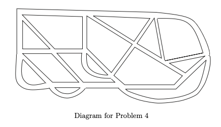

Question 1.2.3. Let H be the graph with V(H)={a,b,c,x,y,z} and E(H)={ab,ay,bx,by,cx,cz,xz,yz}. Find v(H) and e(H), and draw a diagram of H.
Solution v(H)=6 e(H)=8
Question 1.2.4 Let G be the multigraph shown below.
(i) Find A(G) (ii) Is A(G) symmetric (i.e., (i,j)-entry = (j,i)=entry)? (iii) What is the sum of the values of the entries in each row (respectively, column)? (iv) What is your interpretation of the 'sum' obtained in (iii)?
Solution
(i)
A(G)=0130110100310110010110110
(ii) Yes, A(G) is symmetric. (iii)5,2,6,2,3 (iv) The sum of the values of the entries in each row corresponds to the total number of edges that vertex is incident with.
Question 1.2.5 The adjacency matrix of a multigraph G is given below:
A=0210120100110320030010200
Draw a diagram of G Solution
Exercise 1.2
(1) Let G be the multigraph representing the following diagram. Determine V(G), E(G), v(G), and e(G). Is G a simple graph?
(Note that you may use A to represent Asuncion, B to represent Beijing, C to represent Canberra, etc. )
Solution
(3) Define a graph G such that V(G)={2,3,4,5,11,12,13,14} and two vertices s and t are adjacent if and only if gcd{s,t}=1. Draw a diagram of G and find its size e(G).
Solution
First we draw the graph G
To find e(G) we simply count all the edges.
We conclude that e(G)=20.
(4) The following diagram is a map of the road system in a town. Draw a multigraph to model the road system, using a vertex to represent a junction and an edge to represent a road joining two junctions.

Solution
Start by labeling all the junctions
Here's the graph
(5) Let G be a graph with V(G)={1,2,⋯,10}, such that two numbers i and j in V(G) are adjacent if and only if ∣i−j∣≤3. Draw the graph G and determine e(G).
Solution
First draw the graph G. Note that the author uses the term "graph" to refer to a simple graph.
Next label all the edges
e(G)=24
(6) Let G be a graph with V(G)={1,2,⋯,10}, such that two numbers i and j in V(G) are adjacent if and only if i+j is a multiple of 4. Draw the graph G and determine e(G).